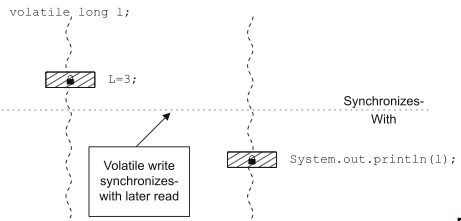
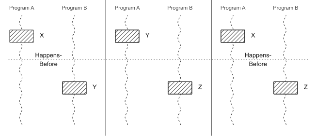
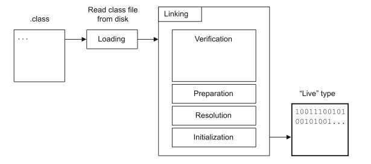
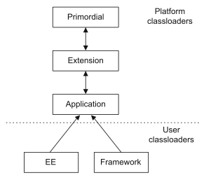
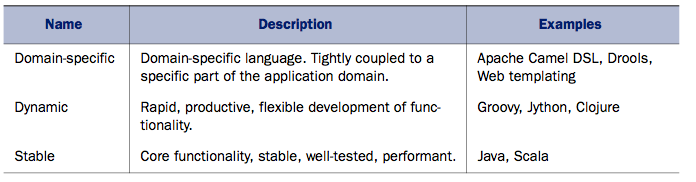

The VM specification
NO LONGER
makes any reference to JLS (Java Lang Spec)
Project Coin
What are the few limitations of Java 6 I/O?
What are the few limitations of Java 6 I/O?
Use the Future objects isDone() method
Event style programming
Why do we use Spring framework?
What is the main feature that frameworks like Spring/EJB provide?
Why do we use Spring framework?
What is the main feature that frameworks like Spring/EJB provide?
JSR-330
A static block takes a lock on what?
A static block takes a lock on what?
'Class' object
A method takes a lock on what?
A method takes a lock on what?
this
A static method takes a lock on what?
A static method takes a lock on what?
'Class' object
Are locks in Java re-entrant?
Are locks in Java re-entrant?
Yes. thread holding a lock that encounters a synchronization point for the same lock will be allowed to continue
JMM: Synchronizes-with: “releases happen before acquires” 
JMM: Happens-before: usecases: program order and synchronizes-with 
Features of Java JMM
Concurrency Design Concepts
Please explore java.util.concurrent package
Classloading

Classloaders

Method Handles and Method Types
Within Class Files...
A Digression into Performance
What is LATENCY?
What is LATENCY?
Latency is the end-to-end time taken to process a single work-unit at a given workload
What is THROUGHPUT?
What is THROUGHPUT?
Throughput is the number of units of work that a system can perform in some time period with given resources
What is UTILIZATION?
What is UTILIZATION?
Utilization represents the percentage of available resources that are being used to han- dle work units, instead of housekeeping tasks
What is EFFICIENCY?
What is EFFICIENCY?
The efficiency of a system is equal to the throughput divided by the resources used
What is CAPACITY?
What is CAPACITY?
Capacity is the number of work units (such as transactions) that can be in flight through the system at any time
What is SCALABILITY?
What is SCALABILITY?
Change in throughput or latency as resources are added is the scalability of a system
What is DEGRADATION?
What is DEGRADATION?
At what point and by how much the scale begins to tip
Memory speed has improved more slowly than CPUs have added transistors, which means there’s a risk that the processing cores will fall idle due to not having the relevant data on hand to process
Memory Latency Hierarchy
Hardware techniques like instruction-level parallelism (ILP) and chip multithreading (CMT), were used to try to keep the CPU operating on data, even in the face of the widening gap between CPU capability and memory latency
So, a large portion of CPU power is consumed in caching and data-locality and NOT in application processing
This means the future of application performance is intimately tied to good concurrency programming - get your skills right
Clocks
How many exist? And how do you get them?
Clocks
And these clocks DRIFT AWAY
Areas of Memory
How many exist?
Areas of Memory
Garbage Collection (GC)
How many exist?
Garbage Collection (GC)
G1
JVM
How many do you know?
JVM
Polyglot Programming
Polyglot

My Hypothesis
Thank you!!